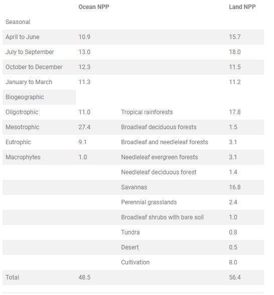
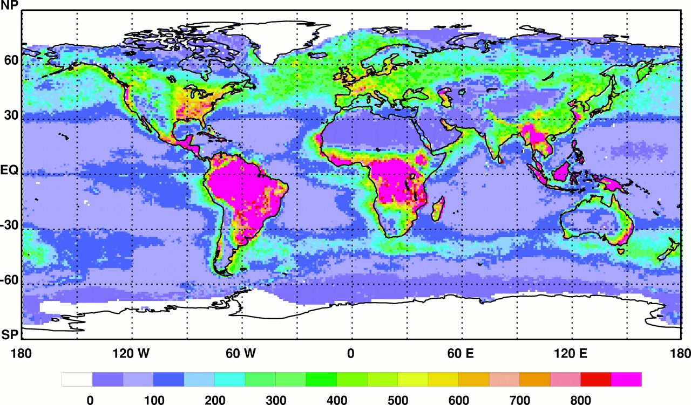
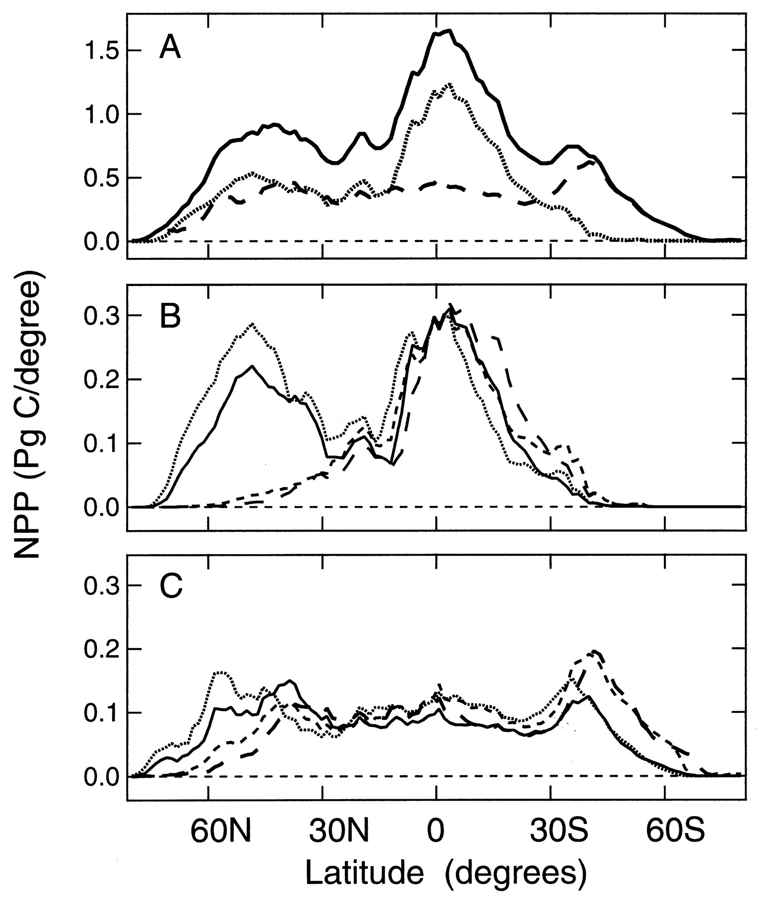

EarthPrimaryProduction-Field
Created Wednesday 03 February 2021 (21-02-03_09-34-11)
@2021 @article @environment
Field, Christopher B.; Behrenfeld, Michael J.; Randerson, James T.; Falkowski, Paul (1998). Primary Production of the Biosphere: Integrating Terrestrial and Oceanic Components. Science 281(5374), 237-240. DOI: 10.1126/science.281.5374.237
Using the integrated CASA-VGPM biosphere model, we obtained an annual global NPP of 104.9 Pg of C (Table 1), with similar contributions from the terrestrial [56.4 Pg of C (53.8%)] and oceanic [48.5 Pg of C (46.2%)] components (38)
Kts 2018:Bar-OnBiomassDistribution , V:2018:BurgessScaleOfLife
Full text
Abstract
Integrating conceptually similar models of the growth of marine and terrestrial primary producers yielded an estimated global net primary production (NPP) of 104.9 petagrams of carbon per year, with roughly equal contributions from land and oceans. Approaches based on satellite indices of absorbed solar radiation indicate marked heterogeneity in NPP for both land and oceans, reflecting the influence of physical and ecological processes. The spatial and temporal distributions of ocean NPP are consistent with primary limitation by light, nutrients, and temperature. On land, water limitation imposes additional constraints. On land and ocean, progressive changes in NPP can result in altered carbon storage, although contrasts in mechanisms of carbon storage and rates of organic matter turnover result in a range of relations between carbon storage and changes in NPP.
Article
Biological processes on land and in the oceans strongly affect the global carbon cycle on all time scales (1–4). In both components of the biosphere, oxygenic photosynthesis is responsible for virtually all of the biochemical production of organic matter. Mechanisms of and constraints on photosynthesis on land and in the oceans are similar in many respects, but past syntheses of primary production from photosynthesis have focused on the terrestrial or ocean components individually. Consequently, models of the global carbon cycle are compartmentalized, with limited opportunities for comprehensive or comparative analyses. Here, we present integrated estimates of primary production based on satellite measurements for both oceanic and terrestrial ecosystems. This integrated approach builds from parallel data sets and model formulations toward a truly biospheric view.
The biologically mediated parts of the carbon cycle in terrestrial and ocean biomes involve both production and turnover of organic matter. At the biochemical level, photosynthesis and the biosynthesis of organic compounds, the processes that result in net primary production (NPP), are very similar. NPP, originally defined as the amount of photosynthetically fixed carbon available to the first heterotrophic level in an ecosystem (5), is also the difference between autotrophic photosynthesis and respiration (6). NPP is a major determinant of carbon sinks on land and in the ocean (7, 8) and a key regulator of ecological processes, including interactions among trophic levels (9,10). Because ocean NPP is dominated by phytoplankton, nearly all of the plant biomass is photosynthetic. Therefore, relatively short-term measurements (24 hours) can account for both photosynthesis and respiration. In contrast, the major components of terrestrial plant biomass are roots and stems, which respire but do not generally photosynthesize. In terrestrial ecosystems, it is relatively straightforward, in principle, to determine NPP from incremental increases in biomass plus litter fall over weeks, months, or years. Below-ground processes, however, add numerous challenges to these conceptually simple measurements.
NPP on land and in the oceans has been modeled with a variety of approaches with a range of fundamental mechanisms, specific details, and levels of integration (11, 12). A common contemporary approach, developed independently for land and ocean models, calculates NPP as a function of the driving energy for photosynthesis, the absorbed photosynthetically active (400 to 700 nm) solar radiation (APAR), and an average light utilization efficiency (ɛ) (13, 14)
(1)
Models based on this approach are diverse in terms of mechanistic detail, but they are all strongly connected to global-scale observations. For the oceans, APAR can be related to satellite-derived measurements of surface chlorophyll (C sat) (14), and for terrestrial systems, it can be determined from satellite-based estimates of vegetation greenness, often the normalized difference vegetation index (NDVI) (15). APAR depends on the amount and distribution of photosynthetic biomass (the primary source of variability in C sat and NDVI), as well as the amount of downwelling solar radiation and the fraction that is in the visible (photosynthetically active) wavelengths. ɛ is an effective photon yield for growth that converts the biomass-dependent variable (APAR) into a flux of organic compounds (NPP). For both terrestrial and oceanic models, ɛ cannot be directly measured from space and must be parameterized with field measurements.
For marine systems, ɛ can be parameterized from thousands of14C-based field measurements of NPP (16–18). Terrestrial values are less abundant, largely because ɛ depends on time-consuming determinations of NPP and APAR (19, 20). Uncertainty in ɛ is a primary source of error in land and ocean NPP estimates. With few exceptions, ocean NPP models estimate ɛ solely as a function of sea-surface temperature (11, 16,21–23). In terrestrial ecosystems, ɛ varies with ecosystem type and with stresses from unfavorable levels of temperature, nutrients, and water (20, 24,25).
In this study, we combined results from conceptually similar land and ocean NPP models, the Carnegie-Ames-Stanford approach (CASA) (26) for land and the Vertically Generalized Production Model (VGPM) (16) for the oceans (27). Both of these models are simple formulations designed with an emphasis on integrating spatially extensive satellite observations rather than describing the mechanistic details of NPP. In essence, both models use versions of Eq. 1, expanded to provide an effective interface with observed variables. The fundamental relation in the CASA model is
(2)
where APAR (in megajoules per square meter per month) is a function of NDVI and downwelling photosynthetically active solar radiation (PAR) and ɛ (in grams of C per megajoule) is a function of the maximum achievable light utilization efficiency ɛ* adjusted by functions that account for effects of temperatureg(T) and waterh(W) stress (26). For the VGPM, the fundamental equation is
(3)
where C sat is the satellite-derived, near-surface phytoplankton chlorophyll concentration (in milligrams per cubic meter), Zeu is the depth (in meters) to which light is sufficient to support positive NPP, f(PAR) describes the fraction of the water column from the surface to Zeu in which photosynthesis is light saturated, and Poptb(T) is the maximum, chlorophyll-specific carbon fixation rate (in milligrams of C per milligram of chlorophyll per day), estimated as a function of sea-surface temperature (11, 16). For the VGPM, variation in the fraction of absorbed PAR is a function of depth-integrated phytoplankton biomass (that is, Csat × Zeu). The product of Poptb and f(PAR) yields an average water column light utilization efficiency, making it the corollary of ɛ in Eq. 1. The VGPM operates with a daily time step, whereas CASA has a monthly time step.
Biospheric NPP was calculated from Eqs. 2 and 3, on the basis of observations averaged over several years. Because the satellite data necessary for estimating APAR cover different time periods for the oceans and land, the averaging periods are different: 1978 to 1983 for the oceans and 1982 to 1990 for land. The input data includeC sat from the Coastal Zone Color Scanner (CZCS) (28), NDVI from the Advanced Very High-Resolution Radiometer (AVHRR) (29–31), cloud-corrected surface solar radiation (32), sea-surface temperature (33), terrestrial surface temperature (34), precipitation (35), soils (36), and vegetation (37), plus field-based parameterizations of ɛ (16,21, 26). Our results based on time-averaged data are likely to characterize typical NPP from this time period but certainly miss key anomalies such as El Niño–Southern Oscillation, as well as progressive global changes. The contribution of models like the one used here to quantifying these changes will depend on continuous, high-quality data, over extended periods.
Using the integrated CASA-VGPM biosphere model, we obtained an annual global NPP of 104.9 Pg of C (Table 1), with similar contributions from the terrestrial [56.4 Pg of C (53.8%)] and oceanic [48.5 Pg of C (46.2%)] components (38). This estimate for ocean productivity is nearly two times greater than estimates made before satellite data (39, 40). Average NPP on land without permanent ice cover is 426 g of C m−2year−1, whereas that for oceans is 140 g of C m−2 year−1. The lower NPP per unit area of the ocean largely results from competition for light between phytoplankton and their strongly absorbing medium. For the average ocean C sat of 0.19 mg m−3(16, 41), only 7% of the PAR incident on the ocean surface is absorbed by the phytoplankton (14), with the remainder absorbed by water and dissolved organics. In contrast, leaves of terrestrial plants absorb about 31% of the PAR incident on land without permanent ice cover. Although primary producers in the ocean are responsible for nearly half of the biospheric NPP, they represent only 0.2% of global primary producer biomass (3,16, 21). This uncoupling between NPP and biomass is a consequence of the more than three orders of magnitude faster turnover time of plant organic matter in the oceans (average 2 to 6 days) (1) than on land (average 19 years) (42).
Table 1
Annual and seasonal NPP of the major units of the biosphere, from CASA-VGPM. Ocean color data are averages from 1978 to 1983. The land vegetation index is from 1982 to 1990. All values are in petagrams of carbon (1 Pg = 1015 g). Ocean NPP estimates are binned into three biogeographic categories on the basis of annual average C sat for each satellite pixel, such that oligotrophic = C sat < 0.1 mg m−3, mesotrophic = 0.1 < C sat < 1 mg m−3, and eutrophic = C sat > 1 mg m−3 (21). The macrophyte contribution to ocean production from (38) is not included in the seasonal totals. The vegetation classes are those defined by (37).

On land and in the oceans, spatial heterogeneity in NPP is comparable, with both systems exhibiting large regions of low production and smaller areas of high production. In general, the extreme deserts are even less productive than the vast mid-ocean gyres (Fig. 1). Maximal NPP is similar in both systems (1000 to 1500 g of C m−2year−1), but regions of high NPP are spatially more restricted in the oceans (essentially limited to estuarine and upwelling regions) than in terrestrial systems (for example, humid tropics) (Fig. 1). On land, 25.0% of the surface area without permanent ice (3.3 × 107 km2) supports an NPP greater than 500 g of C m−2 year−1, whereas in the oceans, that figure is only 1.7% (5.0 × 106 km2). Highly productive (that is, eutrophic) regions in the oceans contribute less than 18% to total ocean NPP (Table 1).
Figure 1
Global annual NPP (in grams of C per square meter per year) for the biosphere, calculated from the integrated CASA-VGPM model. The spatial resolution of the calculations is 1° × 1° for land and 1/6° × 1/6° for the oceans. Input data for ocean color from the CZCS sensor are averages from 1978 to 1983. The land vegetation index from the AVHRR sensors is the average from 1982 to 1990. Global NPP is 104.9 Pg of C year−1 (104.9 × 1015 g of C year−1), with 46.2% contributed by the oceans and 53.8% contributed by the land. Seasonal versions of this map are available at http://www.sciencemag.org/feature/data/982246.shl. NP, North Pole; EQ, equator; Sp, South Pole.

Globally, NPP reaches maxima in three distinct latitudinal bands (Fig. 2). The largest peak (∼1.6 Pg of C per degree of latitude) near the equator and the secondary peak at midtemperate latitudes of the Northern Hemisphere are driven primarily by regional maxima in terrestrial NPP. The smaller peak at midtemperate latitudes in the Southern Hemisphere (Fig. 2) results from a belt of enhanced oceanic productivity corresponding to enhanced nutrient availability in the Southern Subtropical Convergence (43). At mid and low latitudes, ocean NPP is remarkably uniform, consistent with the predominant influence of large-scale ocean circulation patterns.
Figure 2
Latitudinal distribution of the global NPP in Fig. 1. (A) The global total (land plus ocean) NPP (solid line), land total NPP (dotted line), and ocean total NPP (dashed line). (B) Land NPP: April to June (solid line), July to September (dotted line), October to December (short dashed line), and January to March (long dashed line). (C) Ocean NPP: The four seasonal periods are as in (B). The seasonal information is available as maps athttp://www.sciencemag.org/feature/data/982246.shl

Seasonal fluctuations in ocean NPP are modest globally, even though regional seasonality can be very important (44). Ocean NPP ranges from 10.9 Pg of C in the Northern Hemisphere spring (April to June) to 13.0 Pg of C in the Northern Hemisphere summer (July to September) (Table 1). The July to September maximum in ocean NPP is largely a result of open-ocean blooms north of 30°N (Fig. 1). Despite the greater ocean area in the Southern Hemisphere, a similar bloom-induced increase in NPP does not occur during the Austral summer (Fig. 2), perhaps reflecting the more common occurrence of iron limitation in the high-latitude southern oceans (45,46). Seasonal fluctuations in terrestrial NPP are much greater, with global production during the Northern Hemisphere summer (July to September) about 60% greater than that in January through March (Table 1).
Spatial variation in NPP in both the terrestrial and ocean components of our biosphere model is driven mostly through variation in light capture by photosynthetic biomass or APAR and secondarily through variation in ɛ (12, 16). Spatial and seasonal variation in photosynthetic biomass is, in turn, largely controlled by the availability of other resources. Nitrogen, iron, and light are critical in the oceans. On land, water stress, temperature, and other nutrients such as phosphorus also play a role (47). Consequently, regional and seasonal distributions of NPP reflect the interface between physical (for example, precipitation, PAR, ocean circulation, and water-column stratification) and biological processes (for example, species composition, microbial activity, and interactions among organisms).
Over most of the ocean, as on land, nutrients required to support NPP are primarily supplied through local decomposition, rather than from sources of new nutrients. Biologically mediated carbon sinks are, however, largely dependent on inputs of new nutrients, supplied from processes such as upwelling, biological N fixation, deposition from the atmosphere, and cultural eutrophication (48, 49). In both systems, progressive changes in NPP over periods of decades to centuries can have a range of impacts on the global carbon cycle, depending on the turnover rates of the pools that receive the NPP (7). In terrestrial systems, where plant and soil pools typically have turnover times in the range from years to decades (50), even modest increases in NPP potentially result in substantial carbon storage in plants and soils (7). Because of the rapid turnover of oceanic plant biomass, even large increases in ocean NPP will not result in substantial carbon storage through changes in phytoplankton standing stock. They do, however, impact ocean carbon storage through effects on fluxes of inorganic and refractory organic carbon to the ocean interior (3).
The future development and application of whole biosphere models, such as that described here, can play a major role in the emergence of integrated, comprehensive perspectives on the function of the Earth system. NPP is critical for these efforts, because it is central to carbon and nutrient dynamics and it links biogeochemical and ecological processes. The global carbon cycle and the ecological processes that contribute to it are not in steady state but are highly dynamic (51–53). Current capabilities to interpret these dynamics and their implications for the future of the biosphere are constrained by gaps in the data record, limitations on data quality, and incomplete understanding of some of the mechanisms. The successful launch of the Sea-viewing Wide-Field-of-view Sensor (Sea WiFS) in September 1997 plus other forthcoming remote-sensing missions will provide marked improvements in the quality of APAR measurements for both land and ocean. These programs need to be paralleled by efforts to improve the characterization of spatial and temporal variation in ɛ and the fate of carbon after it is fixed in photosynthesis.
REFERENCES AND NOTES
- G. Falkowski and J. A. Raven, Aquatic Photosynthesis (Blackwell, Oxford, UK, 1997).
- F. Keeling, S. Shertz, Nature 358, 723 (1992).
↵
- G. Falkowski, R. T. Barber, V. Smetacek, Science 281, 200 (1998).
↵
- B. Osmond, in Photosynthesis, W. R. Briggs, Ed. (Liss, New York, 1989), pp. 5–17.
- L. Lindeman, Ecology 23, 399 (1942).
↵
- H. Schlesinger, Biogeochemistry: An Analysis of Global Change (Academic Press, San Diego, CA, 1991).
- V. Thompson, J. T. Randerson, C. M. Malmström, C. B. Field, Global Biogeochem. Cycles 10, 711 (1996).
↵
- Gruber, J. L. Sarmiento, T. F. Stocker, ibid., p. 797.
- T. Tynan, Nature 392, 708 (1998).
↵
- J. McNaughton, ibid. 345, 613 (1990).
↵
- Behrenfeld, P. Falkowski, Limnol. Oceanogr. 42, 1479 (1997).
↵
- B. Field, J. T. Randerson, C. M. Malmström, Remote Sens. Environ. 51, 74 (1995).
- L. Monteith, J. Appl. Ecol. 9, 747 (1972).
- Morel, Prog. Oceanogr. 26, 263 (1991).
↵
- J. Sellers, Remote Sens. Environ. 21, 143 (1987).
- J. Behrenfeld, P. G. Falkowski, Limnol. Oceanogr. 42, 1 (1997).
↵
- M. Balch, C. F. Byrne, J. Geophys. Res. 99, 7555 (1994).
↵
↵
- Russell, P. G. Jarvis, J. L. Monteith, in Plant Canopies: Their Growth, Form and Function, G. Russell, B. Marshall, P. G. Jarvis, Eds. (Cambridge Univ. Press, Cambridge, 1989), pp. 21–39.
- Ruimy, G. Dedieu, B. Saugier, J. Geophys. Res. 99, 5263 (1994).
↵
- Antoine, J. M. Andre, A. Morel, Global Biogeochem. Cycles 10, 57 (1996).
↵
- Balch et al., J. Geophys. Res. 97, 2279 (1992).
↵
- R. Bidigare, B. B. Prezelin, R. C. Smith, in Primary Productivity and Biogeochemical Cycles in the Sea, P. G. Falkowski, Ed. (Plenum, New York, 1992), pp. 175–212.
- Joel, J. A. Gamon, C. B. Field, Remote Sens. Environ. 62, 176 (1997).
- Runyon, R. H. Waring, S. N. Goward, J. M. Welles, Ecol. Appl. 4, 226 (1994).
- S. Potter et al., Global Biogeochem. Cycles 7, 811 (1993).
↵
Confidence in NPP estimates from these and similar models can be derived from several sources, including ability to reproduce small-scale NPP measurements, model intercomparisons (11), fidelity in tracking interannual variations in agricultural NPP over large regions [
- M. Malmström et al., Global Biogeochem. Cycles 11, 367 (1997);
], and ability to reproduce the annual cycle of atmospheric CO2 [W. Knorr and M. Heimann, Tellus Ser. B 47, 471 (1995;
- T. Randerson, M. V. Thompson, I. Y. Fung, T. Conway, C. B. Field, Global Biogeochem. Cycles 11, 535 (1997);
], when coupled with appropriate atmospheric and heterotrophic models. Even with these approaches, the actual values still include uncertainties related to both the data and the structure of the models.
↵
- Feldman et al., Eos 70, 634 (1989).
↵
- D. Tarpley, S. R. Schneider, R. L. Money, J. Clim. Appl. Meteorol. 23, 491 (1984).
The processed NDVI data set used for this report is from S. O. Los [thesis, Vrije University, Amsterdam (1998)].
↵
Until the launch of SeaWiFS in September 1997, there was no single instrument appropriate for estimating APAR in the oceans and on land at the global scale. For the oceans, there has been no color sensor at all since the end of the CZCS mission in 1986. For land, the AVHRR instruments aboard the NOAA satellites have been invaluable, even though their design was not optimized for vegetation monitoring.
↵
- K. B. Bishop, W. B. Rossow, J. Geophys. Res. 96, 16839 (1991).
↵
Sea-surface temperatures are climatological averages from the U.S. Navy Marine Climatic Atlas (CD-ROM) (Naval Command Oceanographic Detachment Center, Asheville, NC, 1995), with processing described in (16).
↵
Terrestrial temperatures were calculated for 1982 to 1990 from long-term averages (54 ) plus anomalies from the updated data set of J. Hansen and S. Lebedeff [J. Geophys. Res. 92, 13345 (1987)]. These temperatures were then averaged by month, for the 9-year period.
↵
Terrestrial precipitation was calculated for 1982 to 1990 from long-term averages (54) plus anomalies from C. B. Baker, J. K. Eischeid, T. R. Karl, and H. F. Diaz (paper presented at Ninth Conference on Applied Climatology, American Meteorological Society, Dallas, TX, 1995). These values were then averaged by month, over the 9-year period.
↵
- Zobler, A world soil map for global climate modeling (NASA Technical Memorandum 87802, NASA, New York, 1986).
- S. DeFries and J. R. G. Townshend, Int. J. Remote Sens. 15, 3567 (1994).
This estimate includes a 1 Pg of C contribution from macroalgae [
- V. Smith, Science 211, 838 (1981);
]. Differences in ocean NPP estimates in (16) and those in Fig. 1 and Table 1 result from (i) addition of Arctic and Antarctic monthly ice masks, (ii) correction of a rounding error in previous calculations of pixel area, and (iii) changes in the designation of the seasons to correspond with (3).
↵
- J. Koblentz-Mishke, V. V. Volkovinsky, J. G. Kabanova, in Scientific Exploration of the South Pacific, W. S. Wooster, Ed. (National Academy of Science, Washington, DC, 1970), pp. 183–193.
- M. Woodwell et al., Science 199, 141 (1978).
↵
This value corresponds to an integrated phytoplankton from the surface to Z eu of about 15 mg m−2.
↵
- V. Thompson and J. T. Randerson, Global Change Biol., in press.
- L. Pickard and W. J. Emery, Descriptive Physical Oceanography: An Introduction (Pergamon, Oxford, UK, 1982).
- H. Martin, S. E. Fitzwater, R. M. Gordon, Global Biogeochem. Cycles 4, 5 (1990).
↵
- H. Martin, R. M. Gordon, S. E. Fitzwater, Limnol. Oceanogr. 36, 1793 (1991).
↵
Over millennial time scales, water and temperature are the dominant controlling factors for terrestrial NPP, with effects of nutrient availability assuming a major role on interannual to decadal time scales (51) [
- S. Schimel et al., Global Biogeochem. Cycles 10, 677 (1996)].
↵
- M. Vitousek, H. A. Mooney, J. Lubchenco, J. M. Melillo, Science 277, 494 (1997).
↵
On land, but not in the oceans, elevated atmospheric CO2 could facilitate increased carbon storage per unit of stored nutrients, through increased allocation to recalcitrant tissues with high ratios of carbon to nutrients [
- R. Shaver et al., Bioscience 42, 433 (1992)].
↵
- S. Schimel et al., Global Biogeochem. Cycles 8, 279 (1994).
↵
- H. Braswell, D. S. Schimel, E. Liner, B. Moore III, Science 278, 870 (1997).
↵
- B. Myneni, C. D. Keeling, C. J. Tucker, G. Asrar, R. R. Nemani, Nature 386, 698 (1997).
↵
- Ciais, P. Tans, M. Trolier, J. W. C. White, R. J. Francey, Science 269, 1098 (1995).
- J. Shea, Climatological Atlas: 1950–1979 (TN-269, National Center for Atmospheric Research, Boulder, CO, 1986).